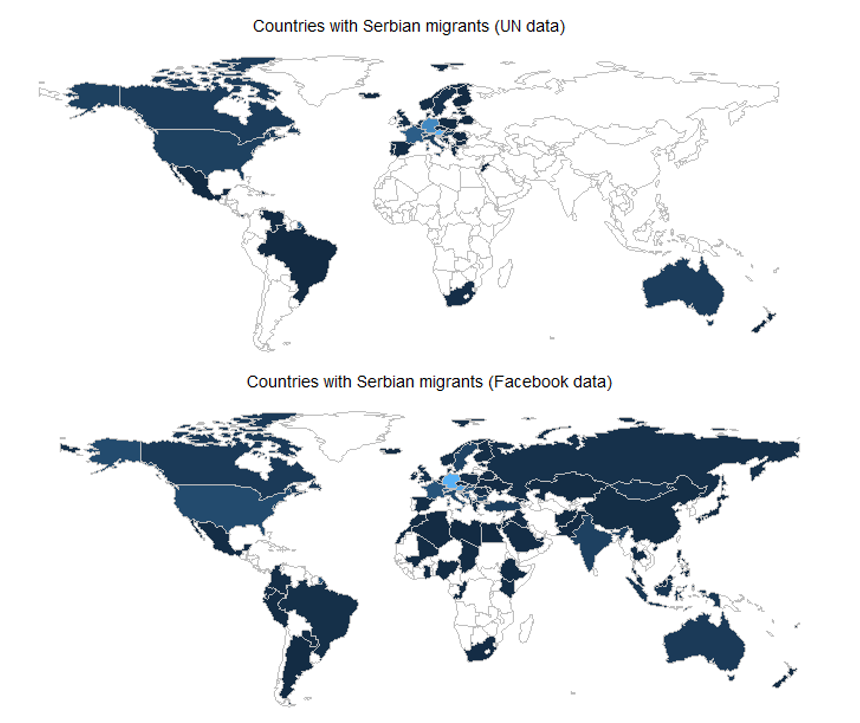
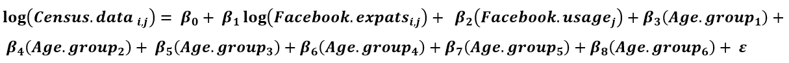

Analiza se zasniva na prikupljanju podataka iz Facebook API-a i kalibraciji podataka na osnovu zvanične statistike. Iako i metoda i podaci imaju određena ograničenja, oni mogu dati vrlo detaljan uvid u trendove emigracije, što je glavni cilj ove studije. Glavna prednost predstavljene metodologije nije mogućnost procene apsolutnog broja migranata u pojedinim zemljama, već praćenje promena migracionih brojeva tokom vremena, kao i više uvida u zemlje u kojima se tradicionalni demografski podaci ne prikupljaju ili su lošeg kvaliteta.

Podaci
Korisnici platformi društvenih mreža nisu reprezentativan uzorak društva u celini. Ovo se posebno odnosi na starosnu dob, gde je distribucija korisnika društvanih mreža mlađa od stanovništva u celini. Oko 45% stanovnika Srbije koristi jednu od Facebook tehnologija (Facebook, Instagram, WhatsApp). Budući da je minimalna starosna granica za Facebook nalog 13 godina, nema podataka o korisnicima i migrantima mlađim od 13 godina. Podaci iz zvaničnih izvora korišćeni su za validaciju procena Facebook-a i za razvoj modela. Za zemlje Evropske unije podaci o migrantima dostupni su putem Eurostata (ali ne i za Nemačku, Francusku, UK, Španiju ili Holandiju). Statistički podaci o broju srpskih migranata u Sjedinjenim Državama prikupljeni su putem ACS. Za ostale zemlje koristili smo podatke Odeljenja za ekonomska i socijalna pitanja Ujedinjenih nacija (UNDESA) i UN-ovu bazu demografskih statistika.
Regresioni Model
Iako se Facebook brojevi razlikuju od zvaničnih izvora, ovi podaci imaju izuzetno visok koeficijentom korelacije od 0,977. Da bismo na sistematičan način ispravili neusklađenost starosne distribucije podataka i uzeli u obzir različite stepene korišćenja Facebook-a u različitim zemljama, računali smo parametre linearne regresije:

Koeficijenti regresije ukazuju da podaci na Fejsbuku potcenjuju broj migranata u starijim starosnim grupama. Pored toga, veličina koeficijenta beta-2 sugeriše da je model osetljiv na stopu korišćenja Facebook-a. To znači da će u zemljama sa velikom upotrebom Facebook-a izračunati broj migranata biti sličan neobrađenim Facebook podacima. Neće biti značajnih ispravki pošto većina koristi Facebook, pa će verovatno i migranti. Suprotno tome, u zemljama sa niskom stopom korišćenja, projektovani broj migranata biće nekoliko puta veći od neobrađenih podataka kako bi se uzeli u obzir ljudi koji nisu na Fejsbuku.
Zaključak
Rezultati ukazuju da je Facebook dobar izvor demografskih podataka. Za srpski kontekst i zemlje Balkana, ova vrsta analize mogla bi biti od velike pomoći, jer zemlje u regionu pokazuju visoku migraciju na godišnjem nivou, što je teško pratiti desetogodišnjim popisima. Jeftin i brz postupak prikupljanja podataka omogućava nam da ponovimo analizu svakih nekoliko meseci, dajući vrlo detaljan uvid u trendove emigracije tokom vremena. U stvari, glavna prednost predstavljene metodologije nije mogućnost procene apsolutnog broja migranata u pojedinim zemljama, već praćenje promena broja migracija tokom vremena. Šire gledano, društvene mreže bi se mogle koristiti za istraživanje migracionih fenomena povezanih sa ratovima, ekonomskim poteškoćama ili političkom nestabilnošću. Ovaj projekat je samo prvi korak na našem putu ka analiziranju migracionih obrazaca srpskih migranata.